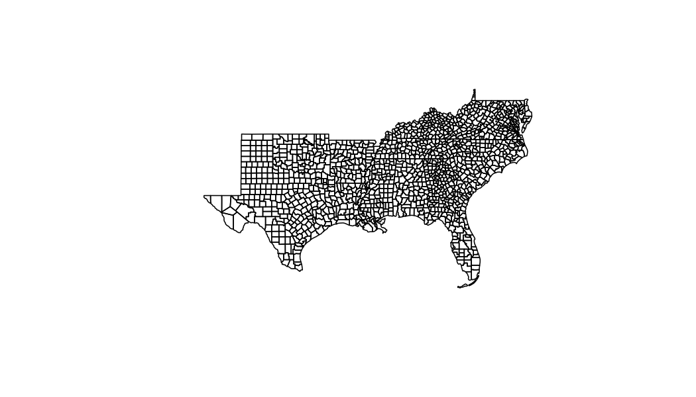

Define Area of Interest and Aggregation Units

Find cached geogrids
cache = geo_cache_list()
ai_norm = cache %>%
filter(grepl('ai_normal', fullname)) %>%
pull(fullname)
soil_files = cache %>%
filter(grepl('silt-1m-percent.tif', fullname)) %>%
pull(fullname)
Disparate Grids 😢
## $ext
## [1] -124.79 25.05 -67.04 49.42
##
## $dimXY
## [1] 1386 585
##
## $resXY
## [1] 0.04167 0.04167
##
## $prj
## [1] "+proj=longlat +datum=WGS84 +no_defs"
## $ext
## [1] -2357000 277000 2259000 3173000
##
## $dimXY
## [1] 4616 2896
##
## $resXY
## [1] 1000 1000
##
## $prj
## [1] "+proj=aea +lat_0=23 +lon_0=-96 +lat_1=29.5 +lat_2=45.5 +x_0=0 +y_0=0 +datum=NAD27 +units=m +no_defs"
Warp AI to soils and execute Zonal
## user system elapsed
## 8.439 1.916 10.894
## geoid V1 V2
## 1: 01001 0.9602 0.2573
## 2: 01003 0.8641 0.2383
## 3: 01005 1.0199 0.2043
## 4: 01007 0.9078 0.3181
## 5: 01009 0.8451 0.3371
## 6: 01011 0.9868 0.2654
w = weighting_grid(sta, AOI, "geoid")
new = cache %>%
filter(grepl('silt-1m-percent.tif|sand-1m-percent.tif|clay-1m-percent.tif', fullname))
sta =
system.time({
oo = execute_zonal(c(new$fullname, out), w = w,)
})
oo=setNames(oo, c("geoid", "clay", "sand", "silt", "AI"))
head(oo)
## geoid clay sand silt AI
## 1: 01001 0.2060 0.5359 0.2573 0.9602
## 2: 01003 0.1714 0.5416 0.2383 0.8641
## 3: 01005 0.1687 0.6074 0.2043 1.0199
## 4: 01007 0.2245 0.3724 0.3181 0.9078
## 5: 01009 0.1670 0.2545 0.3371 0.8451
## 6: 01011 0.2658 0.4679 0.2654 0.9868